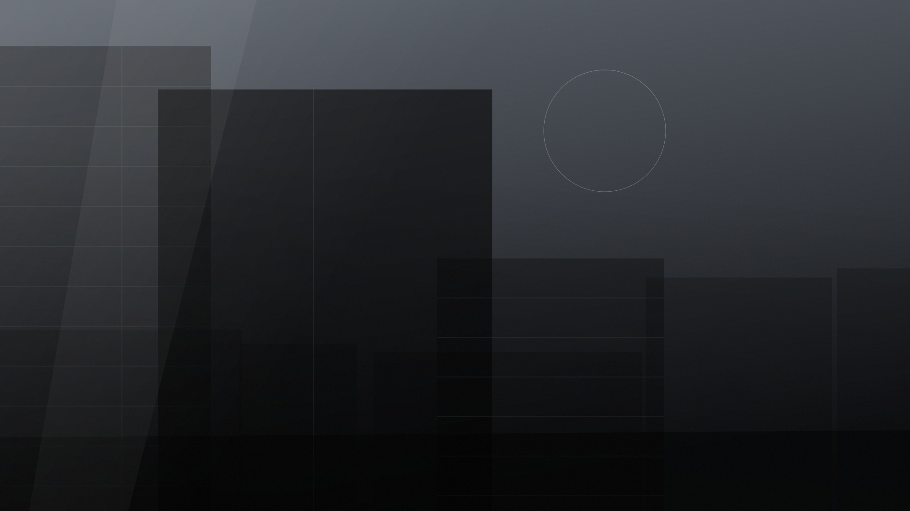
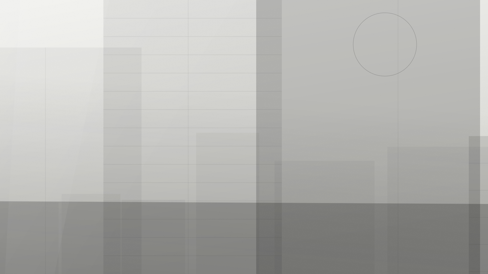
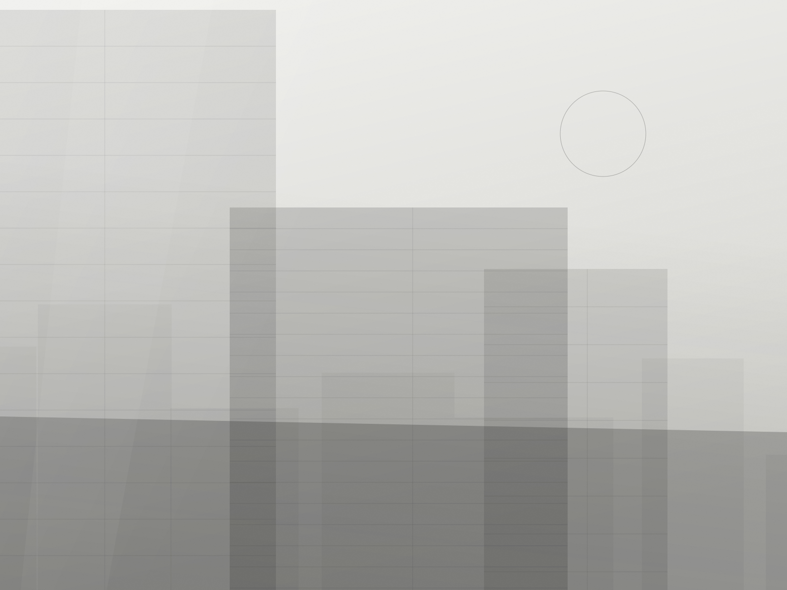
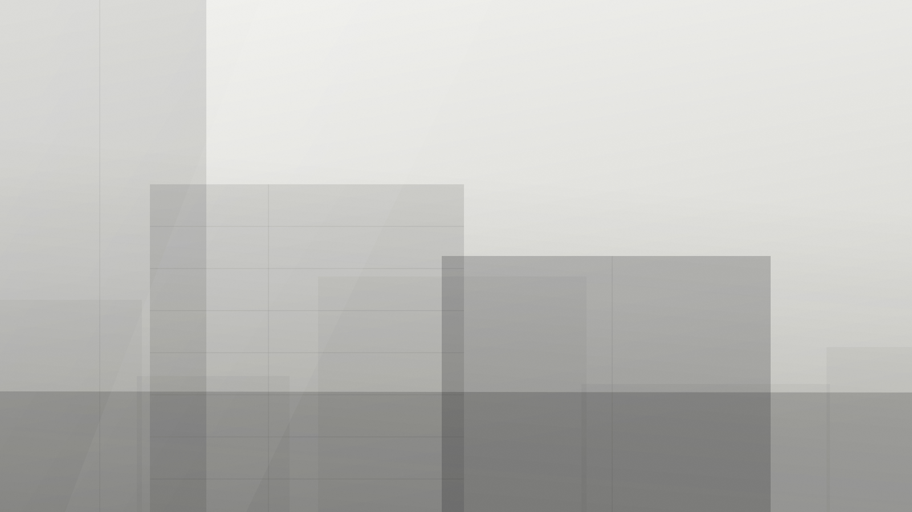

01 Proje
Nişantaşı Rezidans
Dar bir kent parselinde, her kata gün ışığı taşıyan tam yükseklikte bir ışık boşluğu çevresinde kurulan 1.900 m² konut yapısı.

Tasarım Notu
İçe çevrilmiş bir avlu
Parsel 14 metre genişliğinde ve iki yandan komşu duvarlarla sıkışmış durumda — İstanbul'un çoğu kent parselinin hâli. Yapıyı yasal sınırına kadar doldurmak yerine, merkezinden düşey bir boşluk oyduk. Böylece her daire yalnızca sokağa değil, bu boşluğa da açılıyor.
Cephe tek bir malzemeden oluşuyor: elle örülmüş, kireç badanalı tuğla. Her kat hizasında yarım birim kayan düşey derz düzeni, cepheye gölgesini süslemeyle değil derinlikle veriyor. Pencere boşlukları bir desene göre değil, ardındaki odaya göre boyutlandırıldı; kompozisyon böylece içindeki yaşamı kaydediyor.
İç mekânda palet üç öğeye indirildi — yağlanmış meşe, açık renkli sıva ve karartılmış çelik. Sirkülasyon cömert ve gün ışığı alır biçimde tutuldu; artan alan değil, paylaşılan bir yaşam mekânı olarak ele alındı.
Boşluk, bahçeye yeri olmayan bir parselde bahçenin işini yapıyor.
Görseller



